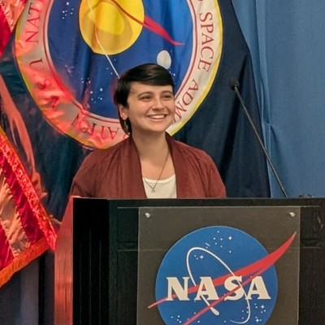
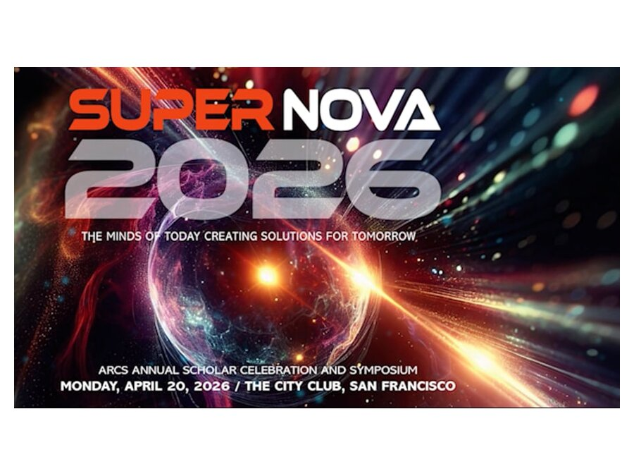
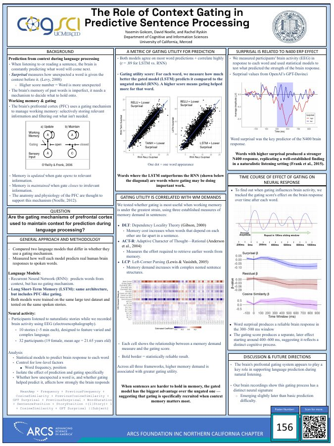
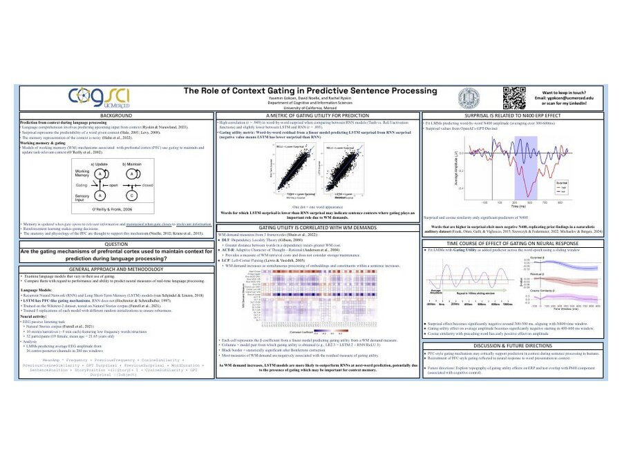
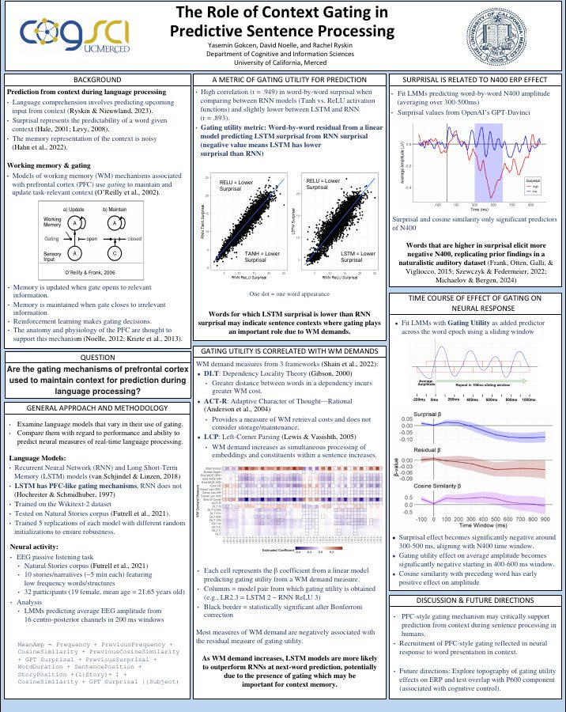
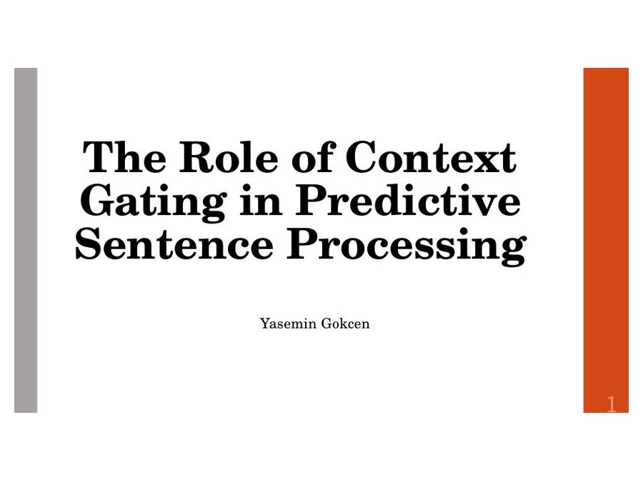
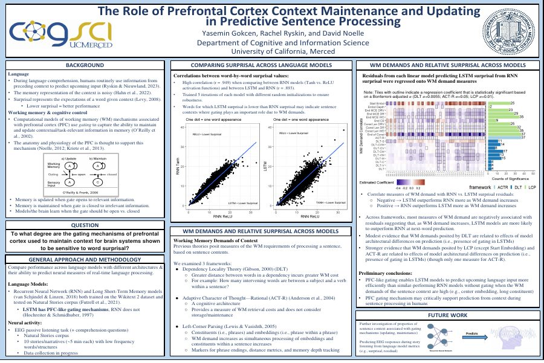
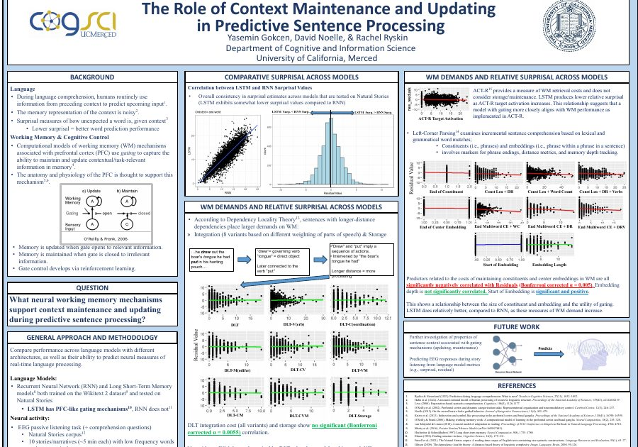
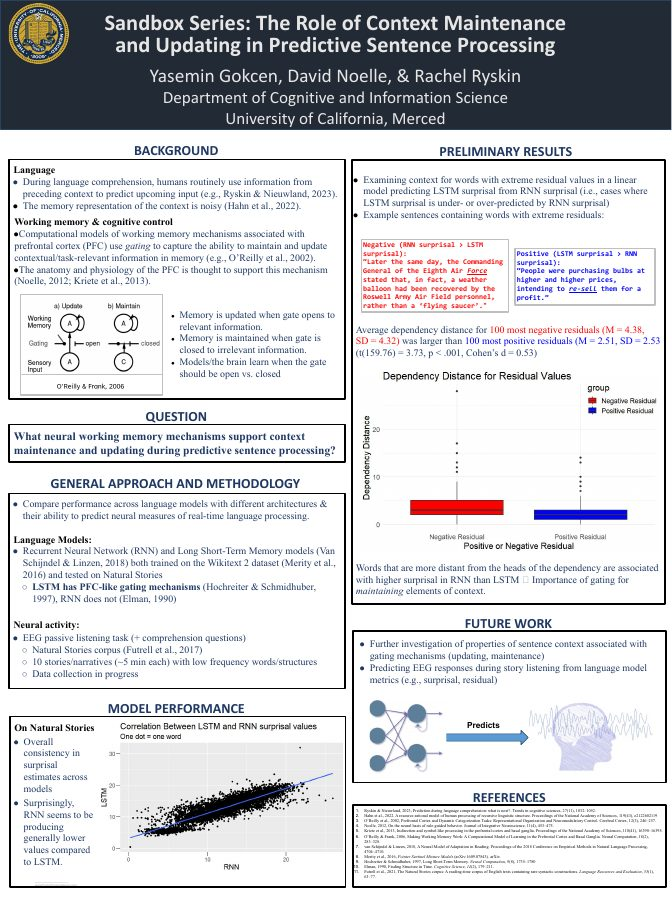

Yasemin Gokcen
Computational cognitive scientist · PhD candidate, UC Merced · Human-Autonomy Teaming Lab, SJSURF/NASA Ames
About
I study how the brain decides what to remember while it understands language, and I build computational models that make that decision explicit. My dissertation asks whether the working-memory gating mechanisms attributed to prefrontal cortex are what allow us to hold onto the right context for predicting the next word. To answer it I train and compare neural language models, record EEG while people listen to naturalistic stories, and build biologically grounded working-memory models.
Alongside the dissertation, I do applied human factors research on autonomous aviation. I spent summer 2025 at Wisk Aero and summer 2026 with the San Jose State University Research Foundation in the Human-Autonomy Teaming Lab at NASA Ames Research Center, where I continue as a research assistant. That work is about the same underlying question from the other side: how people manage attention and context when they are teamed with automation.
I am a two-time ARCS Foundation Scholar and a 2026 recipient of the UC Merced Graduate Dean's Dissertation Fellowship. I expect to complete my PhD in May 2027 and am interested in research roles in conversational AI, model evaluation, and human-AI interaction.
Research
Context gating in predictive language processing
Comprehenders constantly predict upcoming words from context, but the memory holding that context is limited and noisy. Something has to decide what to keep and what to let go. Prefrontal cortex is thought to solve this with a gating mechanism: open the gate to update working memory with relevant input, close it to protect what is already there. My dissertation tests whether this gating is what supports prediction during real-time comprehension, using three converging methods.
- Language-model comparison. I trained matched recurrent language models that differ only in whether they have gating (LSTM vs. RNN, several random seeds each) and derived a word-by-word gating utility score: how much better the gated model predicts each word. Gating utility rises with independent measures of working-memory demand from three psycholinguistic frameworks (Dependency Locality Theory, ACT-R retrieval cost, and left-corner parsing), which means gating is recruited exactly where context memory is under the most strain.
- EEG during naturalistic listening. Thirty-two participants listened to the ten Natural Stories narratives while I recorded EEG. Mixed-effects models with GPT surprisal, semantic similarity, frequency, and duration as predictors replicate the surprisal–N400 relationship in a naturalistic auditory setting, and the gating-utility score predicts a separate, later component (roughly 400–600 ms), consistent with gating being a distinct process from prediction itself.
- A biologically grounded working-memory model. I built a prefrontal-cortex/basal-ganglia working-memory model in Go using the Leabra/Emergent framework, ran parameter sweeps on an HPC cluster with SLURM, and ablated three model variants to identify which memory component carries the effect. A manuscript on adaptive gating for sequence prediction with long-distance dependencies is in preparation.
Human-autonomy teaming in aviation
With the HAT Lab I owned the reaction-time data for a human-in-the-loop study of remote pilots responding to autonomous detect-and-avoid alerts, turning raw simulation logs into the analysis-ready dataset used by the team, and analyzed response times by alert type and maneuver together with NASA-TLX workload and physiological measures. I also authored a research roadmap for a five-year agenda on the changing human role in autonomous aviation and served as an embedded observer for a week-long air traffic control simulation with retired controllers. At Wisk Aero I led rapid prototype studies with eye-tracking, physiological sensors, and qualitative methods, and presented findings that shaped product decisions.
Publications
Talks & Posters








Code
Experience
Education & Awards
- PhD, Cognitive and Information Sciences, University of California, Merced, expected May 2027. Advisors: David C. Noelle and Rachel Ryskin.
- MS, Cognitive and Information Sciences, University of California, Merced, 2026.
- BS, Cognitive/Computational Neuroscience, The Ohio State University, 2022.
- Graduate Dean's Dissertation Fellowship, UC Merced (2026)
- ARCS Foundation Scholar, Northern California Chapter (2024–2026)
- MacKenzie Scott Travel Award (2023)
- UC Merced Academic Senate Summer Fellowship (2023–2024)
- ADNiR Scholar, The Ohio State University (2021–2022)